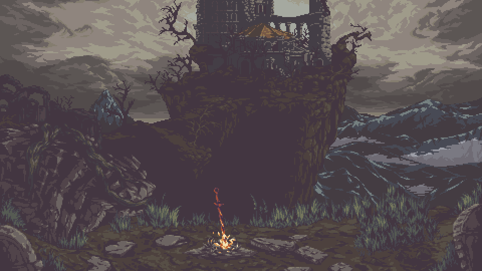

THE FIRST DESCENT
A first account of learning to see the forgotten edges of a system.
READ INSCRIPTION
A cybersecurity student. An unkindled one.
Seeking embers in the dark.
A first account of learning to see the forgotten edges of a system.
READ INSCRIPTIONNotes from the path into reverse engineering and system internals.
READ INSCRIPTION